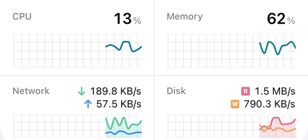

See how it’s doing, live
CPU, memory, network and disk graphs update as you watch. Below them, Monitor shows a card for each app you have installed: volumes and their health, backups, containers, virtual machines, recent warnings from the logs. Reorder the cards or hide the ones you don’t need.